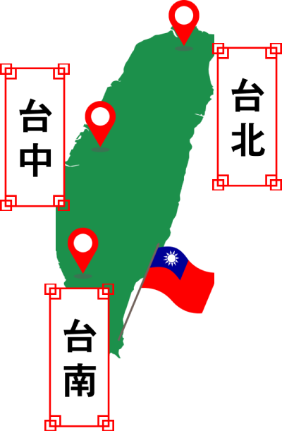

-

Formosa
フォルモサ （麗しの島） -

フォルモサは、十六世紀にポルトガル人がエメラルド色の美しい台湾を見つけて発した賛嘆の言葉です。緑にあふれた台湾の美しい風景が、あなたを桃源郷の世界へといざなってくれるでしょう。

Galleryギャラリー


Travelおすすめスポット
訪れた人々を魅了する「美麗島」台湾。そんな台湾の人気スポットを代表する地を３つのエリアでご紹介。様々な風景に誰もが魅了されます。
- 
Eventおすすめイベント
台湾ランタンフェスティバル
-
-
開催期間
春節 旧暦元日（2024年2月24日～3月2日予定）
春節の風習として「天燈」と呼ばれる紙製のランタンに無病息災などの祈りを書き込み、火種を用いて熱気球と同じ原理で空に飛ばす儀式。吉祥や邪気払いの意味があります。
台北最High新年城
カウントダウンパーティー
-

-
開催期間
12月31日～1月1日
台北101では毎年、新年を祝う花火を実施。元旦0時から約3分間、台北101を覆い尽くすように、ビル全体から美しい火花が舞い散ります。世界中から注目されるイベントの一つです。
台湾基本情報
- ■正式名称：中華民国・台湾
- ■首都：台北
- ■人口：約2,300万人
- ■面積：約3万6,000km²
- ■人種・民族：漢民族、先住民
- ■宗教：仏教、道教、キリスト教、その他
- ■言語：北京語、台湾語
- ■通貨：元（ニュー台湾ドル）
- ■時差：1時間 台湾が正午のとき、日本は午後1時
- ■台湾の気候・服装
- ■亜熱帯に属し一年を通して温暖な台湾。しかし北回帰線から南は熱帯で暑く、北部は大陸性気候の影響を受けて冷え込むこともあるなど、地域差を頭に入れて服装の準備を
- ■台湾の祝祭日
- ■正月：1月1日
- ■端午節※：6月22日 ■春節※：1月20日～29日
- ■中秋節※：9月29日 ■和平記念日：2月28日
- ■国慶節：10月10日 ■清明節：4月5日